1. HP / MP
The Health and Mana Gauges are on the upper left corner of the screen.
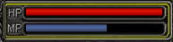
Health Potion (HP) gauge
The Red Gauge shows the players remaining health. It is reduced when the player is attacked. The character dies if the HP reached '0'. Hence the players need to regenerate their health by having enough stock of HP potions and pressing the '1' or 'F1' key.
Mana Potion (MP) gauge
The Blue Gauge shows the players remaining Mana or Magic Potions. Player can not use skills, if Mana is "0" Players must use "2" or "F2" button to recharge Gauge.
Restocking Potions
A3 uses a system of HP/MP potions in liquid form to recharge these attributes. These potions are stocked in "canteens" which can be bought at the village Healer NPCs.
2. Shue Gauge
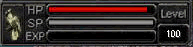
Shue HP Gauge
The top bar indicates the health status of the cyber pet or "Shue". Press "3" to recharge, keep in mind that the player needs to have enough stock of HP potions.
Shue SP Gauge
The middle or grey bar indicates the "hunger" status of the Shue. Shues must be fed at least once a week in. To feed the Shue, buy Shue feed from the Healer (Yellow Canister). If the Shue SP bar touches "0" the Shue dies and can only be resurrected by using a Shue Resurrection Potion which can be bought at the nearest Healer.
Shue Experience Gauge
The third gauge - yellow in colour, indicates the status of the Shue's current level. When the bar reaches the other end a level is gained.
3. Quick Skill Slot
The Quick Skill Slot is used for placing and activating commonly used skill. More info on how to use the Quick Skill slot is given in the Game Play section.
These shortcut keys are designated as 4-9. When the appropriate shortcut key is pressed, the corresponding spell/skill is activated. On using the right mouse click the spell is cast. By pressing Ctrl-S it is possible to assign 6 additional Hotkey Bar slots which can be toggled.
4. Minimap
The minimap is used to locate the position of the player with respect to his surroundings. The name of the Map is in the top bar. Below this the relative coordinates of the player are displayed. The player itself is displayed by a red triangle, indicating the location of the player and the direction in which he is facing. The shortcut key to open / close the Minimap is "P". The green circle / warp points, indicates exit and entry points to move from one map to the next map.
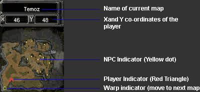
5. Experience Bar
At the lowest part of the interface, the current experience percentage at any given level is displayed by a yellow bar. On hunting, the experience bar will rise every time a kill is made depending on the experience level given by that particular creep / monster. Experience is also gained by performing Quests. When the bar reaches 100%, the player rises to next level. Experience can also become negative, but without de-leveling the player. This happens in case of frequent deaths. The player has to then compensate for the negative experience before the bar reaches the zero marker again.
6. Menu Bar
Click on the Icon below for more info
Character Window (Shortcut: "A")
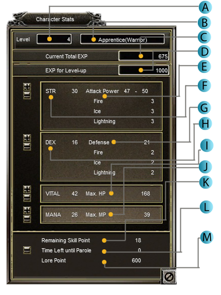
Shows the Present level of the Player
Displays the Position of the current character
Displays the amount of experience acquired by the player

Displays the total Experience required to advance to next level
Displays the Damage (In case of melee attack)/ magical damage (In case of spell attack)
Displays the skill points alloted to attack (The more the skill points alloted more is the damage)
Displays the Defense of the character
Displays the skill points alloted to Dexterity (The more the skill points alloted more is the defense)
Displays the Maximum Health Points of the character
Displays the Maximum Mana Points of the character
Displays the Skill Points that can still be alloted into the above.
Displays the time left in minutes until the parole becomes "zero".
Displays the lore points acquired from doing quests. Lore points can be used to remove the parole.
Inventory (Shortcut: "I" or "D")
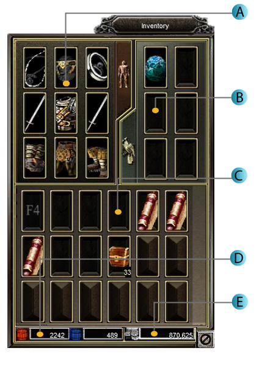
Displays the items (Helmet, Armour, Weapons, Pants Gloves, Boots, Necklaces and Rings) the character is equipped with. When the mouse is hovered on the slot the item with its restrictions (Level, STR, DEX etc) is shown.
Shue Inventory: Displays the shues/Pets the character is carrying. The left hand top most slot shows us the active shue that the character is equipped with. When the mouse is hovered on the slot, it shows the class of the shue, its level, HP and SP of the shue.
Item Inventory: Displays the items that the character is carrying. When the mouse is hovered over the item, the properties of that item are displayed. A level 1 character has 10 active inventory slots and each inventory slot unlocks after completion of 5 levels. A maximum of 30 inventory slots can be unlocked.
HP/MP Reserves: Displays the Health potions and Mana Potions that the character is carrying. Any character can carry a maximum of 20 times of the Health/Mana bar.
Woonz: Displays the woonz (Currency in game) that a character has in the inventory.
Skill Window (Shortcut: "S")
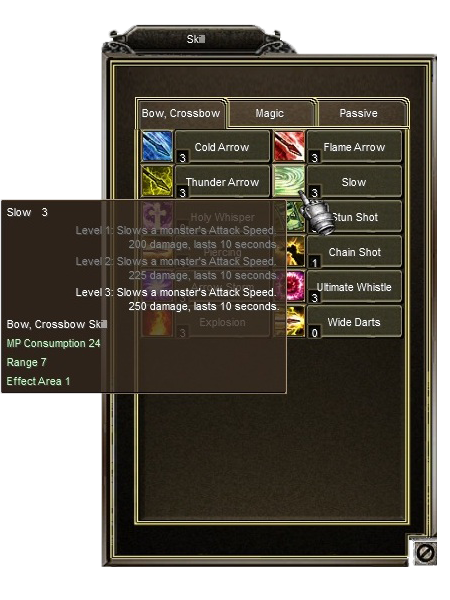
Players can access to the skills window by using the shortcut S on the keyboard. The Skills window displays the skills learnt and the pending skills that need to be learnt.
Each skill has three levels which can be learnt at a specified level few skills of specific classes.
Players can learn a specific skill by right clicking on the skill scroll (once the requirements are met) which can be obtained by exterminating monsters.
Passive Skills
Passive skills add a specific attribute to a character. After having completed 100 levels, every character gets 1 Passive Skill Point (PSP) at every level up. At 160 level a character gets 60 PSP and at 161 level when a character reaches the first aura it gets 10 PSP. At 162 level when the character reaches second aura it gets 11 PSP and so on. A character gets 120 PSP at 165 level. Players can buy passive skills at NPC Rameda in Hatrel. A detalied guide on Passive Skills can be found in our Advanced guide.
Community Window (Shortcut: "C")
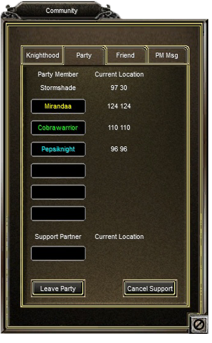
Every player can access to the community window by pressing the shortcut "C" on the Keyboard. The community window consists of 4 tabs namely "Knighthood", "Party", "Friend" and "PM Msg".
Knighthood
This tab shows the present clan in which the character is being recruited. A Knighthood comprises of 13 players joined together as a clan with a specific name. Any clan of a particular town can join other clan and form an alliance. Please refer to our advanced guide for more information on Knighthoods.
Party
Generally pLayers join other players and form a party for bossing hunting, war etc. This particular tab shows the names and location of players associated or joined the party. Any player can join one player between Level 20 to level 50 as a supporting member. When a player does so, the hunting member compromises the experience earned by getting the woonz and drops gained by hunting the monsters. On the other hand the support member gets a good experience earned from the hunting of monsters. Where as if all the players are associated in a party the experience as well as the drops are shared randomly between the players.
Friend
This tab shows all the players those are associated to the current player as friends. More information on friends can be found in the advanced guide.
PM (Private Message)
By accessing this tab players can send message to other players. A nominal charge of 5000 wz will be collected for sending private messages. Private message can be sent to multiple receiptants.
Quest (Shortcut: "Q")
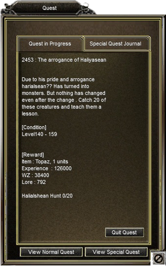
Players can access the Quest Window by pressing Keyboard shortcut Q. The Quest Window provides information about the current quest. All Basic Information like the quest provider, the basic rewards like level requirement, items, experience, Woonz and Lore can be accessed from this window. Players can quit the current quest by left clicking on Quit Quest. More information about quests can be found in our advanced guide.
Special Quest
By clicking on the Special Quest Journal players can get information about the special quests. All Special Quests have a quest requirement and players have to fulfill those inorder to carry on with the special quest. All the videos in game will provide the necessary information as soon as the Special Quest is started.
Menu (Shortcut: "Esc")
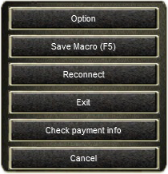
The shortcut for the system menu is Esc. The System menu consists of 6 tabs.
Option
By clicking on the options menu, players can access to two tabs. one being the sound options, gamma effect (Adjusting Brightness) and other options to switch the visual effects in game, the second tab on the other hand allows the players to access the basic options like receiving whispers, switching party option on/off and others.
Save Macro (F5)
Players can acess to this menu by using the shortcut F5 where they can load the custom messages as Macros and save them in shortcuts F9, F10, F11 and F12.
Reconnect / Exit
By clicking these tabs players can reconnect/exit in game respectively.
Check Payment Info
This tab provides information about the monthly/quarterly/annual subscription of the players. It also provides the information of player's last login and the validity of the service.
Cancel
Clicking this tab will switch off the System Menu.
Help (Shortcut: "H")
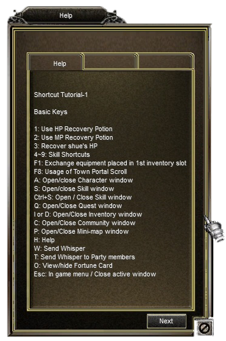
Players can access to the Help window by pressing H ingame.
Help window starts from Shortcut tutorial and will guide players with all the basic information that is needed for continuing the great adventure.
Happy gaming!!
Run / Walk (Shortcut: "R")
A Character could be made to Run or Walk across the map. Running and Walking could be useful under different circumstances.
The keyboard shortcut R could be used to toggle between the Running and Walking mode. However, the walking mode can be toggled only when the character is stationary.
View Point (Shortcut: "Spacebar")
Since A3 is a 3 Dimensional Game, you could change the view of the Camera inorder to reveal a greater vision across a landscape or a Character in the game.
However, at times it might be necessary to toggle to the default Camera view for combat reasons. In this case, the default Camera View could be toggled by pressing Spacebar.
Party (Shortcut: "F6")
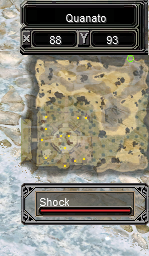
There might be times where you need to have an eye on the HP of the Party members and perform Quick Skills such as Healing or other Buffs. In that case it would be good to toggle the Party Icon. You will get a box on the Right hand side of the display with each of the Party Member listed and their current HP. You can directly toggle the Party Icon Mode by pressing F6 on the Keyboard.
Town Portal (Shortcut: "F8")
Town Portal Scroll is a special item that helps a payer escape or get back to his or her hometown at the press of a button. The town portal scrolls can be bought at the Armory NPC in either of the towns. The scroll can be used by pressing F8 or clicking the Town Portal Scroll button on the menu bar. Please note that you need to have atleast 1 Town Portal Scroll to use this Shortcut.
Shue Potion (Shortcut: "3" or "F3")
Each successful enemy attack will decrease your Shue's Hit Point. You can heal the Shue by pressing 3 or F3 on your keyboard to use a HP (Red) potion from your existing inventory.
Declare War (Shortcut: "U")
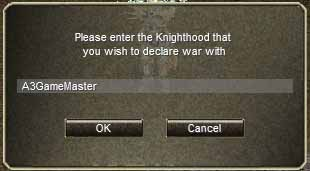
If you are the Leader of a Knighthood, you could declare war on another Knighthood by using the Declare War option. A confirmation would be sent to the opposing Knighthood leader if he is online. When you declare a War on another Knighthood, you could Player Kill the members of the Opposition Knighthood without any Player Killing Penalties. Each Knighthood will have a Score that could be acquired by killing the opponents. A Knighthood War will last for 14 days and the Loosing Knighthood will be disbanded.
Allied Knighthoods could help you with your War by Player Killing opposing Knighthood members which will add to your Knighthood Score.
War Information (Shortcut: "F")
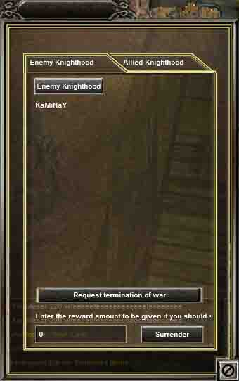
After a War is established between Knighthood, The Knighthood War Information tab will be enabled which gives you the information about the Ongoing War.
Enemy Knighthood Tab
In this tab, you will get a list of all the Enemy Knighthood along with their Allied Knighthoods.
Allied Knighthoods could help you with your War by Player Killing opposing Knighthood members which will add to your Knighthood Score. A Knighthood leader may request the termination of a war either by Gratitude or by paying the opponent Knighthood leader with Woonz.
However, the opposing Knighthood Leader should accept the termination or the War, denying which the War will stil continue.
Allied Knighthood Tab
In this tab, you could find the list of allied Knigthhoods and also the Score and Ending of the Knighthood War
Personal Shop (Shortcut: "Alt + M")
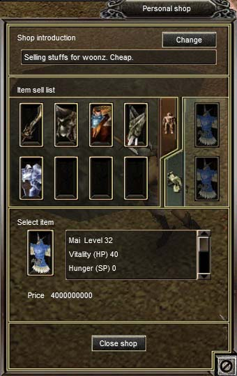
Personal Shop provides you an easy way of selling stuffs to other characters whenever you are away from the game.
You could add items to your Personal Shop from the inventory and set a Price for each item. You could add a description to your shop to attract the passerby. Once the shop is open, the character sits on the ground and will not be able to move unless the shop is Closed.
Personal Shop can only be opened within Town Boundaries.
Mercenary (Shortcut: "Alt + I")
Experience Tab
Shows the current Experience of the Mercenary and also the Experience required for Next Level up. Additionally, you can view the stats of your Mercenary and assign them accordingly with each level up.
Equipment & Skill Tab
In this Tab, the Equipment of the Mercenary could be added or removed. Additionally you could use your Mercenary Skill Points to learn skills.
Policy Tab
Policy Tab defines the attach and HP regeneration options for the Mercenary.
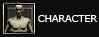 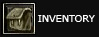 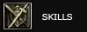  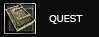 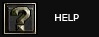 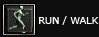 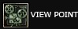 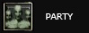 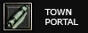 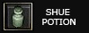
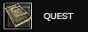 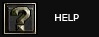 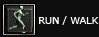 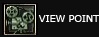 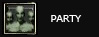 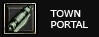 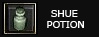
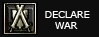 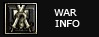 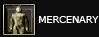
7. HP / MP Potions
In the bottom right corner, the deep-red color vial shows the current amount of HP Potions that the player is carrying. The deep-blue color vial shows the current amount of MP Potions that the player is carrying.
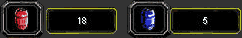
As the player consumes these (by pressing 1 or F1 for HP Regen and 2 or F2 for MP Regen and 3 or F3 for Regen HP of Shue) the quantity potions carrying will reduce.
8. Chat Window
In the bottom right is the chat window. Players can chat to one another or just message in general using this.
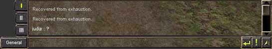
The buttons with the roman numbers on the left side - I, II, III - Are used as Filter options. To modifiy these options Press ! button on the bottom right of the chat interface.